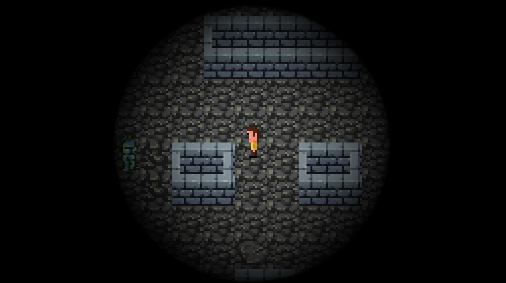
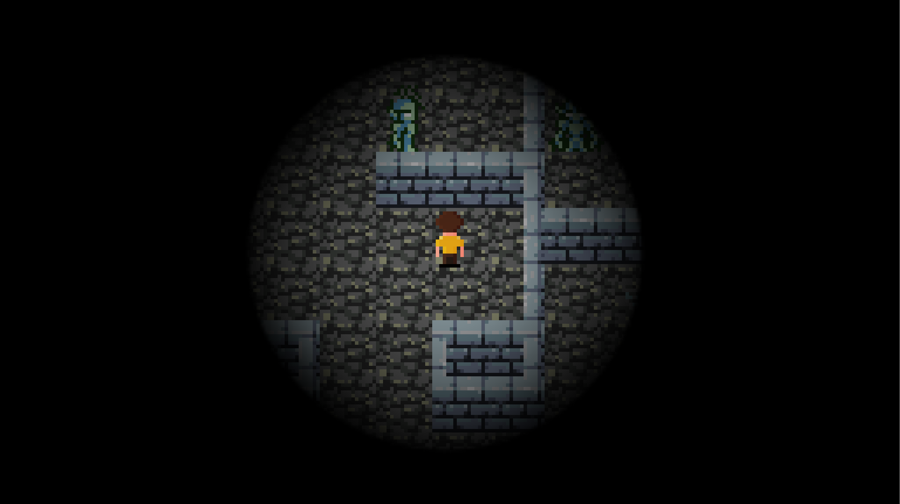
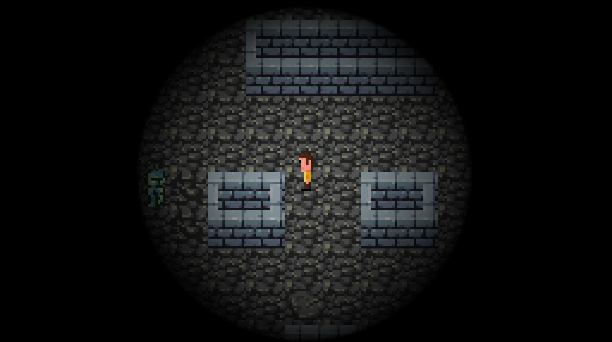
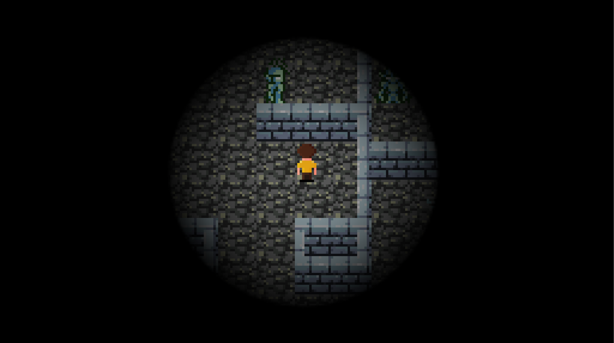

Lucas Tulio
Game developer
But also a neat Android and front-end engineer with 12 years of experience.

 lucasctulio@gmail.com
lucasctulio@gmail.com
But also a neat Android and front-end engineer with 12 years of experience.

 lucasctulio@gmail.com
lucasctulio@gmail.com
Made in 48 hours for the Reddit Game Jam 5, the goal of this top down game is to find a hidden item inside a dark dungeon. As time passes, the light around the player becomes weaker. It also features line of sight mechanics through which enemies are able to spot and chase the player character.
Made in Java using Slick2D. Source code.
 



Programming and game design: Lucas Tulio.
Graphics: Charles Gabriel, Trent Gamblin and Daniel Siegmund.
Sounds from freesound.org: EliDirkx98, harri and Replix.
2013